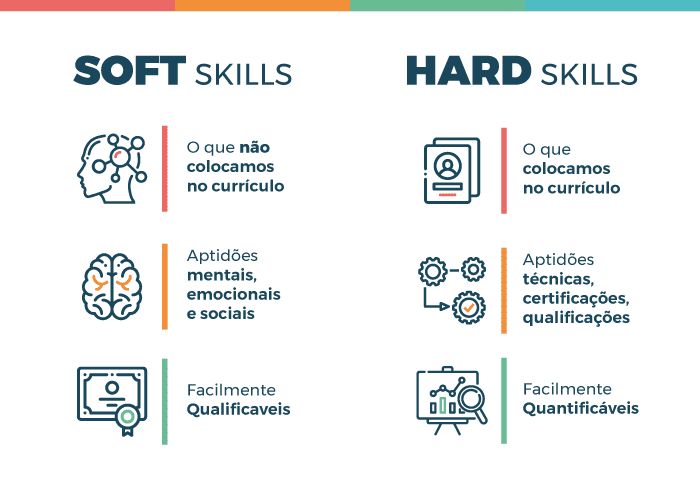
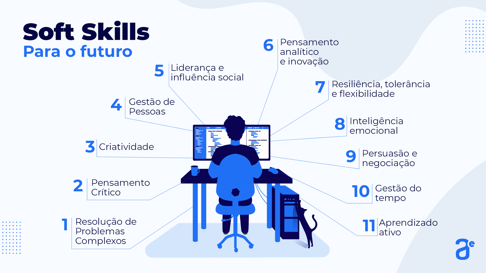
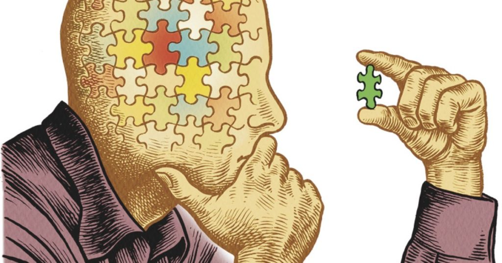
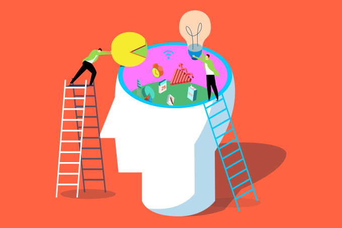

O que são soft skills?

Soft skills são habilidades comportamentais relacionadas a maneira como o
profissional lida com o outro e consigo mesmo em diferentes situações. As soft skills,
diferentemente das hard skills, são habilidades subjetivas, mais difíceis de serem
mensuradas.
Se referem a habilidades comportamentais relacionadas a maneira
como uma pessoa lida com o outro, ou seja, como funciona a
interação dela em grupos e, ao mesmo tempo, como ela lida com
suas próprias emoções. Quanto mais positivamente o profissional
consegue lidar com essas situações ambientais e psicológicas
Como desenvolver as soft skills
Busque autoconhecimento
Você saberia dizer quais são as soft skills que você precisa desenvolver?
E quais habilidades comportamentais você mais domina? O primeiro passo para
desenvolver soft skills é conhecer a si mesmo.
Reserve alguns minutos à noite para refletir sobre tudo o que aconteceu no seu dia,
o que você sentiu em determinados momentos e quais foram suas reações aos
acontecimentos. Se necessário, verbalize as sensações. Esta prática o ajudará a
reconhecer e controlar as próprias emoções, soft skill indispensável para momentos de
pressão.
Alinhe expectativas sobre seu cargo
Independentemente do cargo que você ocupa dentro de uma empresa, é preciso alinhar
com seu gestor quais são as expectativas em relação à função que você exerce e à sua
trajetória na organização.
Quais resultados você precisa entregar para a empresa? Existe um plano de carreira?
Há algo que você precisa melhorar?
Esclarecer o que o colaborador espera da empresa, e vice-versa, abre portas para o
desenvolvimento contínuo de soft skills no meio corporativo. Assim você se sentirá mais
confortável para propor novas ideias e participar de novos projetos.
Invista na cultura do feedback
Feedbacks frequentes sobre o desempenho da equipe e dos gestores são uma forma de praticar
a comunicação assertiva. São nestes encontros que você irá descobrir também quais soft skills
precisam ser aprimoradas, já que seus colegas comentaram seu desempenho, em especial
no âmbito da colaboração.
Exercite a escuta
Parte do processo de desenvolvimento das soft skills envolve ouvir os outros e refletir sobre o
que eles falaram. Mostre que você está realmente interessado no que seus colegas de trabalho
têm a dizer.
Arrisque-se em novos projetos
Esta é uma forma de desenvolver as soft skills na prática. Envolver-se em novos projetos
permite que você conviva com outras pessoas e coloque seu conhecimento à prova.
Você também pode tomar à frente de um projeto para praticar suas habilidades de liderança,
além de trabalhar a comunicação e a colaboração.
Tenha disciplina e paciência
Desenvolver soft skills não é algo que acontece da noite para o dia. Assim como a prática
de atividade física, é algo que precisa ser incluído na rotina. É necessário treino e estudo.
Não pare de estudar
Falando em estudos, é importante lembrar que o desenvolvimento de soft skills é contínuo,
mas que pode ser aprimorado com cursos e aulas voltadas às habilidades comportamentais.
Um profissional que quer se destacar no mercado de trabalho precisa adotar a mentalidade do
lifelong learning, o “aprender a aprender”, um dos pré-requisitos para continuar relevante
no futuro do trabalho.
5 exemplos das soft skills
mais utilizadas nas empresas

Resolução de Problemas
Solucionar problemas complexos vai muito além da decisão sobre
empecilhos simples do dia a dia no trabalho. Envolve a capacidade
de criar soluções fora dos métodos tradicionais, por meio de processos
bem definidos para responder a questões nem sempre determinadas.
A resolução de problemas é apontada também pelo Fórum Econômico Mundial
como uma das habilidades do futuro, já que cada vez mais teremos que atuar
dentro de um contexto de revolução tecnológica.

A resolução de problemas permite aos indivíduos encontrarem soluções para os
problemas de forma eficiente e eficaz. É considerada uma competência interpessoal,
uma soft skill, na expressão em inglês, e não uma competência técnica, uma hard skill.
Um estudo internacional da iCIMS descobriu que os recrutadores valorizam mais as
habilidades pessoais. Nesse contexto, a habilidade interpessoal mais importante
identificada foi a capacidade de resolver problemas, com 62% dos recrutadores procurando
pessoas que possam encontrar soluções.

Pensamento crítico
O pensamento crítico é a capacidade de análise dos fatos, experiências, comentários ou
situações com o objetivo de formar uma opinião própria.
Para isso é necessário construir argumentos com base em dados e informações confiáveis,
com posicionamento ético em relação ao cuidado de si mesmo, dos outros e do planeta.
Quem busca formas de como melhorar o pensamento crítico é capaz de formular e defender
ideias e pontos de vista originais, tornando-se protagonista do saber em vez de um mero
receptor de informações.
Saber como ter pensamento crítico é um processo racional e consciente, que tem origem no
trabalho conjunto das atitudes de uma pessoa e suas habilidades cognitivas.
Entre estas competências estão a capacidade de análise, percepção e empatia. Elas são os
primeiros instrumentos que entram em ação e permitem avaliar e julgar uma situação sob um ponto
de vista particular.
Este processo tem início com a recepção de informações, incluindo aí textos, imagens e conceitos.
de posse destes conhecimentos, inicia-se a fase de questionamento, em que são levantadas hipóteses
e possibilidades.

liderança
Um líder tem a capacidade de influenciar pessoas para que estas façam aquilo o que se deseja de forma
orgânica.
No ambiente organizacional, trata-se de inspirar os colaboradores diariamente para que eles realizem suas
tarefas sabendo qual é o seu propósito dentro da empresa.
Liderança consiste no manejo de pessoas e suas motivações em prol dos objetivos de uma empresa. Envolver
saber como inspirá-las e influenciar suas ações, decisões e comportamentos direcionando seus esforços a
fim de alcançar os resultados desejados.
Esse conceito tem ganhado cada vez mais relevância, especialmente em um cenário no qual a saúde mental
dos colaboradores está em primeiro plano; como na filosofia de gestão people first.
Compreender quais são as habilidades de um líder de sucesso é fundamental não só para compreender o conceito
de liderança a fundo, mas também para cultivá-las em si.
- Líderes normalmente tem um conjunto das características abaixo:
- são decisivos;
- não perdem o foco do objetivo;
- têm consistência entre discurso e ações;
- são empáticos com seus liderados;
- inspiram confiança e também confiam;
- têm um ponto de vista realista;
- procuram levar inspiração.

Criatividade
De acordo com as definições do Oxford Languages, dicionário de português do Google, criatividade
é a “qualidade ou característica de quem ou do que é criativo” ou a “ inventividade, inteligência
e talento, natos ou adquiridos, para criar, inventar, inovar, quer no campo artístico, quer no
científico, esportivo etc”.
Em linhas gerais, criatividade é a capacidade de criar, imaginar ou produzir algo novo e diferente.
Logo nos primeiros anos de vida, somos incentivamos a trabalhar a criatividade. As crianças, por
exemplo, possuem uma alta capacidade para pensar fora da caixa e propor novos olhares sobre aquilo
que já conhecem.

Dicas para aumentar sua Criatividade
Prazos apertados, muitas demandas, falta de tempo. São inúmeras as razões que podem impedir um
indivíduo de ter a criatividade e a inovação como parte da rotina.
Comece pelo pequeno
Muitas pessoas acreditam que ser criativo e inovador é ter ideias grandiosas que vão impactar a
vida de milhares de pessoas e trazer reconhecimento.
A criatividade e a inovação estão nos grandes feitos e descobertas da história da humanidade,
mas também estão nas coisas pequenas do dia a dia.
Trazer ideias que proponham mudanças positivas para sua rotina ou da sua empresa já são um
ótimo começo. Comece refletindo sobre as coisas pequenas que o cercam.
Esteja atento ao seu redor
Ideias todo mundo tem. Como é que entram na cabeça da gente? Entram porque a gente lê, observa,
conversa, vê espetáculos”, disse a escritora Ruth Rocha.
Como explica Rocha, as boas ideias não nascem do nada. É preciso estar atento ao que acontece no
mundo, desde os noticiários até os memes que circulam nas redes sociais.
Os acontecimentos que nos cercam são constante fonte de inspiração e podem apontar caminhos para
propor algo inovador.
Mexa seu corpo
Com o trabalho remoto, tendência que cresceu com a pandemia da Covid-19, muitos profissionais
têm passado ainda mais tempo sem se movimentar.
O estado físico do corpo também é importante para a criatividade. Praticar exercícios físicos
libera hormônios do bem-estar e ajuda na circulação sanguínea. Para a mente funcionar corretamente,
o corpo também deve estar em sintonia.
Dessa forma, manter o corpo em movimento também é uma maneira de estimular e desenvolver a criatividade.
Dê um tempo à sua mente
Quantas vezes você ficou insistindo horas em uma ideia que não levou a nada? O processo de criação pode ser
bem cansativo para a mente.
Por isso, dar um descanso à mente e se afastar por algumas horas do que deve ser produzido pode ser uma boa
saída. Dê um tempo para sua cabeça se recuperar e abra caminho para novas ideias.
“O segredo da criatividade está em dormir bem e abrir a mente para as possibilidades infinitas. O que é um
homem sem sonhos?”, disse o grande físico Albert Einstein.

Resiliência, tolerância ao stress e flexibilidade
O que é resiliência
Ter resiliência é ter a capacidade de se adaptar e se recuperar de situações difíceis ou adversidades. É a
habilidade de superar desafios, resistir à pressão e lidar com as dificuldades de forma positiva e construtiva,
sem se deixar abalar ou desistir diante dos obstáculos.
A resiliência envolve uma combinação de características pessoais, como autoconfiança, perseverança, flexibilidade,
otimismo e capacidade de lidar com emoções negativas. Pessoas resilientes são capazes de aprender com as experiências
adversas, crescer e se desenvolver a partir delas, ao invés de serem destruídas ou desmotivadas por elas.
Como ter tolerância ao estresse e flexibilidade
Para ter tolerância ao estresse e flexibilidade, é importante seguir algumas práticas e hábitos saudáveis.
Aqui estão algumas sugestões:
- Pratique mindfulness: a meditação mindfulness pode ajudá-lo a desenvolver a capacidade de se concentrar
no momento presente e gerenciar seus pensamentos e emoções de forma mais eficaz. Isso pode ajudar a reduzir
o estresse e aumentar a sua capacidade de lidar com situações desafiadoras. - Exercite-se regularmente: fazer exercícios físicos regularmente pode ajudar a reduzir o estresse e melhorar
o humor. Além disso, o exercício pode aumentar a sua resistência ao estresse, tornando-o mais resiliente. - Pratique a respiração profunda: a respiração profunda pode ajudá-lo a se acalmar e relaxar em momentos de
estresse. Experimente fazer algumas respirações profundas quando se sentir ansioso ou sobrecarregado. - Desenvolva habilidades de resolução de problemas: aprender a resolver problemas de forma eficaz pode ajudá-lo a
lidar com situações estressantes de forma mais eficaz. Tente identificar soluções práticas para os problemas
que você enfrenta e colocá-las em prática. - Mantenha um estilo de vida saudável: certifique-se de dormir o suficiente, comer bem e manter-se hidratado.
Um estilo de vida saudável pode ajudar a aumentar sua resistência ao estresse. - Pratique a autocompaixão: trate-se com gentileza e compaixão. Quando você enfrentar um desafio, tente ser
gentil consigo mesmo e evite se criticar ou se culpar. - Mantenha relacionamentos saudáveis: ter um sistema de suporte forte pode ajudá-lo a lidar com o estressre.
Certifique-se de manter relacionamentos saudáveis com amigos e familiares e busque ajuda quando precisa
Como a tecnologia pode ajudar na demanda de Soft skills
a tecnologia pode ser uma grande aliada na hora de desenvolver as soft skills. Já existem players no mercado que
oferecem soluções com recursos que possibilitam analisar, mapear e até realizar avaliações de desempenho e
educação corporativa. O uso do mapeamento das soft skills deve ser sempre conectado ao planejamento estratégico da
empresa, para saber quais são necessárias para que a organização alcance seus objetivos.
Desta forma utilizar a tecnologia para apoiar as estratégias e mapeamento dos cargos dentro de uma organização,
garantem uma assertividade na escolha de equipes e possibilita subsidiar gestores com indicadores para uma melhor
tomada de decisão. Ferramentas de desempenho integradas ao plano da empresa geram indicadores tanto para os gestores
como para o departamento de Recursos Humanos, feedbacks contínuos e plano de desenvolvimentos (PDI) com acompanhamento
para o aprimoramento das soft skills, permitindo a ascensão de carreira, melhor adaptação das equipes e maior produtividade.